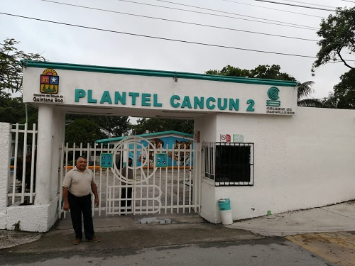

Bienvenidooos

El Colegio de Bachilleres del Estado de Quintana Roo es el Subsistema de
Educación Media Superior más grande del Estado, con 23 Planteles, 21 Centros de
Educación Media Superior a Distancia (EMSaD) y 3 Centros de Servicios
Académicos Integrales (CSAI). Su función es impartir Educación Media Superior,
con un impacto significativo en la zona rural de nuestro Estado en educación a
distancia, y brinda a través de los CSAI diversas opciones como: nivelación
académica, tránsito entre modalidades y la coordinación del examen único del
CENEVAL para la acreditación de la educación media superio. Brindar los servicios
académicos a los estudiantes para lograr la permanencia en las instancias educativas
del COBAQROO. El servicio de Tutorías será para las instancias educativas que cuentan
con las horas asignadas para este servicio